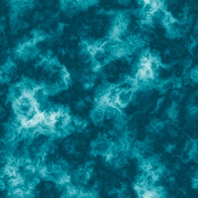
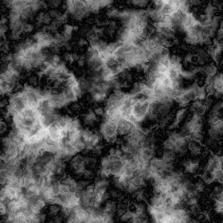

One of the first algorithm we implemented is the Depth of field to render realistic scenes.
To achieve that, our raytracer use to variables:
- Focal length: The distance between the eye and the focused objects
- Aperture size: Define the amount of blur effect applied on objects depending of their distance with the focal length
Smooth shadow follow almost the same principle and are applied to the scene.
Cellular texturing is applied on the floor to create the stone patterns.
We used flat projection to display images on a triangle mesh.
The surface on the right is a triangle mesh with an ocean texture applied.
The texture is defined by the following image:

The same image with bump mapping enabled.
The bump map is defined by the following image:

In order to render more realistic scenes with water, we implemented an other version of the bump mapping using noise and turbulence.
Our raytracer use a specific percentage to define the importance of the bump
on the surface, 0% has no effect on the normal and 100% generate a full bumped normal.
The three spheres on the right share the same noise with turbulence but with different levels of bump noise (from left to right):
- Bump from noise disabled
- Bump with 20% importance
- Bump with 40% importance
The image on the right show our implementation of the glossy reflection.
From left to right we have:
- Highly glossy sphere
- Glossy sphere
- Sphere without glossy reflection
We implemented the photon mapping and caustics to render global illumination:
On the left, the scene is darker because the global illumination is disabled
On the right, the same scene with global illumination
Here are some tests with different numbers of sample to show the importance of sampling with photon mapping:
- Top left: 16 samples per pixel
- Top right: 64 samples per pixel
- Bottom left: 128 samples per pixel
- Bottom right: 256 samples per pixel
The two spheres on those scenes on the right create caustics.
Caustics are independent of the number of sample, that is why on the four images on the right, the caustic stay almost the same:
- The global illumination make it brighter (with all the rest of the scene)
- The caustic is a bit more precise with a lot more samples
In order to render complex scenes with realistic materials like the cave (final image on the right), we improved the .obj file parser to
also load the .mtl files with the materials.
Those material files describe each features to enable and each parameters to apply on the triangles such as:
- Ns: Specifies the specular exponent for the current material.
- Ni: Specifies the index of refraction for the surface.
- d: Opacity of the material.
- Ka: Ambient color.
- map_Kd: Texture to apply on the diffuse reflectivity of the material.
- map_bump: Bump map to apply on the normals of the surface.
...
With this parser, we were able to create scenes with any 3D software (blender, 3ds max) and export them in the .obj format.
The main challenge after that was to check manually for each material if all the properties were properly exported (and this is not often the case).